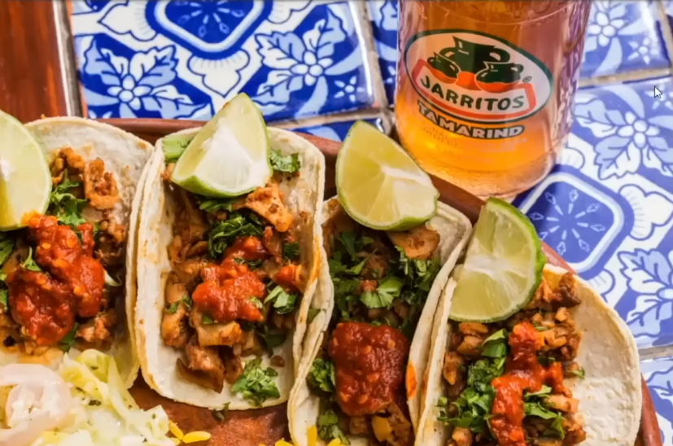

About LTS
LTS was founded . Our shop was built form a love of tacos🌮🌮🌮. We hope our shop adds a unique and interesting place to our little town.

LTS was founded . Our shop was built form a love of tacos🌮🌮🌮. We hope our shop adds a unique and interesting place to our little town.